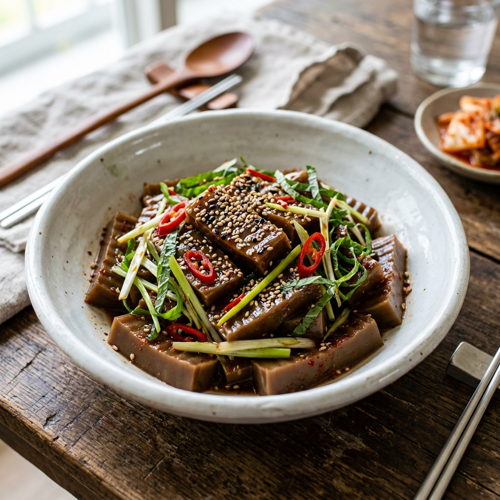
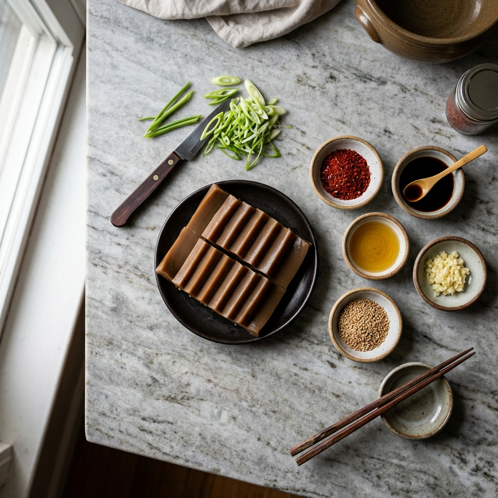

도토리묵 무침은 한국 가정식 밥상에서 빠질 수 없는 반찬입니다. 쫄깃하고 탱글한 묵의 식감에 고소한 들기름 양념이 스며들어 냉국처럼 시원하게 먹히는 이 요리는, 만들기 어려워 보여도 비법을 알면 누구나 식당 수준의 맛을 낼 수 있습니다. 이 글에서는 도토리의 떫은맛(탄닌) 제거 원리부터 들기름 양념 황금비율, 묵이 부서지지 않는 칼질 기법까지 전문 셰프의 노하우를 낱낱이 공개합니다.
🌰 도토리묵의 영양학적 가치 — 왜 전통식품의 자리를 지키는가
도토리묵은 참나무과(Quercus) 식물의 열매인 도토리를 곱게 갈아 전분을 추출하여 굳힌 식품입니다. 100g당 열량은 약 45kcal로 낮고, 지방 함량도 매우 적어 다이어트 식품으로도 주목받고 있습니다.
도토리에는 탄닌(Tannin)이 풍부하게 함유되어 있습니다. 탄닌은 떫은맛의 원인 물질이지만, 동시에 강력한 항산화 성분으로 작용하며 위장 점막을 보호하고 장 운동을 돕는 것으로 알려져 있습니다. 단, 지나치게 많은 탄닌은 철분 흡수를 방해하므로 적절한 제거 과정이 중요합니다.
또한 도토리묵에는 아콘산(Acornic acid)이 함유되어 있어 체내 중금속 배출을 돕고, 숙취 해소에도 효과적이라는 연구 결과가 있습니다. 전통적으로 도토리묵 무침을 술안주로 즐겨 온 이유가 있는 셈입니다.

탱글한 도토리묵 무침 완성작 — 들기름 윤기와 고소한 향이 가득 / AI 제작 이미지
🛒 재료 준비 매뉴얼 — 2인분 기준 정밀 계량
구분
재료명
분량 (2인분 기준)
선택 기준 및 비고
주재료
도토리묵
300g (약 1/2모)
묵 제품 라벨에서 도토리 함량 30% 이상 제품 선택
쪽파
3~4줄기
없으면 실파 또는 부추 대체 가능
당근
1/4개
채 썰기용, 색감과 식감 보완
양념장
간장
2큰술 (약 30mL)
국간장 1 + 진간장 1 혼합 권장
들기름
1.5큰술 (약 22mL)
참기름보다 들기름이 도토리묵과 더 잘 어울림
고춧가루
1큰술
매운맛 조절 가능 (0.5~1.5큰술)
다진 마늘
1/2작은술
생마늘 직접 다지기 권장
설탕
1/2작은술
조청 또는 올리고당으로 대체 시 더 자연스러운 단맛
깨소금
1작은술
볶음깨를 바로 갈아 사용하면 향이 더 좋음
식초
1작은술
묵의 탄닌 쓴맛 중화 및 개운한 뒷맛
참기름
1/2작은술 (마무리용)
완성 후 살짝만 추가, 고소함 극대화
🍶 들기름 양념 황금비율 — 가장 중요한 비법
도토리묵 무침의 맛을 좌우하는 핵심은 들기름과 간장의 비율입니다. 참기름만 쓰면 향이 너무 강해 묵 고유의 맛을 덮고, 들기름만 쓰면 고소함이 부족합니다. 최적의 비율은 아래와 같습니다.
🔑 도토리묵 무침 황금 양념 비율 (2인분 기준)
──────────────────────────────
간장 2 : 들기름 1.5 : 고춧가루 1 : 식초 1 : 설탕 0.5
(단위: 큰술)
──────────────────────────────
마무리 참기름 0.5큰술은 완성 직전 투입 (절대 미리 넣지 않을 것)
깨소금은 마지막에 뿌려 식감 살리기
이 비율의 핵심은 식초의 역할입니다. 식초는 단순히 신맛을 추가하는 것이 아니라, 도토리 탄닌의 쓴맛과 들기름의 약간 비릿한 향을 중화하는 역할을 합니다. 식초가 들어가면 양념장의 전체적인 밸런스가 정리되면서 깔끔하고 개운한 뒷맛이 생깁니다.
🔪 전처리 공정 — 탄닌 제거와 묵 칼질의 비법
도토리묵 무침을 실패하는 가장 큰 이유는 두 가지입니다. 첫 번째는 묵이 부서지는 것, 두 번째는 떫은맛이 남는 것입니다. 두 문제 모두 전처리 단계에서 해결됩니다.
[탄닌 제거 — 찬물 담그기]: 도토리묵을 봉지에서 꺼낸 즉시 볼에 찬물을 넣고 30분~1시간 담가 둡니다. 이때 물을 두 번 정도 교체해 주면 묵 표면에 남은 탄닌이 물에 우러나와 떫은맛이 현저히 줄어듭니다.
[묵 칼질 — 부서지지 않는 기법]: 도토리묵은 찬물에서 꺼내 물기를 살짝 털어낸 뒤 칼질합니다. 묵은 압력을 받으면 쉽게 부서지기 때문에 칼을 앞뒤로 밀며 자르기보다 칼의 무게를 이용해 수직으로 눌러 내리는 방식이 좋습니다. 두께는 1cm×4cm 직사각형 스틱 모양이 이상적이며, 너무 얇으면 양념을 뒤적이는 과정에서 부서집니다.
🥄 Step-by-Step 조리 순서
Step 1. 도토리묵 찬물 담그기
묵을 포장에서 꺼내 찬물이 담긴 볼에 넣고 30분 담급니다. 물을 한 번 교체해 주세요.
Step 2. 채소 손질
쪽파는 4cm 길이로 자르고, 당근은 길이 4cm, 두께 2mm의 채 썰기로 준비합니다. 물기를 제거해 두세요.
Step 3. 양념장 만들기
볼에 간장 2큰술, 들기름 1.5큰술, 고춧가루 1큰술, 식초 1작은술, 설탕 0.5작은술, 다진 마늘 0.5작은술, 깨소금 1작은술을 모두 넣고 잘 섞어 양념장을 만들어 둡니다. 이때 참기름은 절대 넣지 않습니다.
Step 4. 묵 칼질
찬물에서 꺼낸 묵의 물기를 가볍게 털고, 도마 위에서 1cm 두께로 슬라이스 한 뒤 다시 4cm 길이로 잘라 스틱 모양을 만듭니다. 칼을 수직으로 눌러 내리는 방식으로 칼질하세요.
Step 5. 버무리기
넓은 볼에 도토리묵 스틱, 쪽파, 당근채를 넣고 양념장을 끼얹습니다. 손이나 주걱을 이용해 묵이 부서지지 않도록 가볍게 위아래로 들어 올리는 방식으로 버무립니다. 절대 세게 뒤적이지 마세요.
Step 6. 마무리
그릇에 담고 참기름 0.5작은술을 마지막에 두르고 깨소금을 살짝 더 뿌립니다. 냉장고에서 10분 차게 식혀 내면 더욱 맛있습니다.

도토리묵 무침 재료 준비 플랫레이 — 황금비율 양념장 재료들 / AI 제작 이미지
⚠️ 체크포인트(Caution) — 실패 없는 조리를 위한 5가지 주의사항
🚨 도토리묵 무침 실패 방지 체크포인트
① 묵 선택: 도토리 함량이 10% 미만인 저가 제품은 전분 비율이 높아 식감이 물렁물렁합니다. 구매 시 도토리 함량이 30% 이상인 제품을 선택하세요.
② 버무리기 강도: 묵은 두부보다 더 약해서 세게 뒤적이면 순식간에 으스러집니다. 항상 아래에서 위로 떠올리듯 가볍게 버무리세요.
③ 참기름 투입 시점: 참기름은 반드시 완성 직전 마지막에 추가합니다. 미리 넣으면 참기름 향이 지나치게 강해져 들기름의 고소함을 가립니다.
④ 보관 시간: 완성 즉시 먹는 것이 가장 맛있습니다. 오래 재워 두면 묵에서 수분이 빠져나와 양념이 묽어지고 식감이 나빠집니다. 최대 2~3시간 내 소비를 권장합니다.
⑤ 간 조절: 간장 양은 묵의 염도에 따라 조절하세요. 시판 묵은 제품마다 염도 차이가 있으므로 버무리기 전 묵을 한 조각 맛봐서 짠 정도를 확인한 뒤 간장 양을 조절합니다.
🌿 대체 재료 및 변형 레시피 — 나만의 묵 무침 만들기
기본 레시피에 변형을 주면 더욱 다채로운 도토리묵 무침이 완성됩니다.
① 무 채 추가: 얇게 채 썬 무 한 줌을 소금에 절여 물기를 빼고 함께 버무리면 무의 아삭함이 묵의 탱글함과 절묘하게 어우러집니다.
② 오이 채 추가: 오이 1/2개를 어슷썰어 소금에 살짝 절였다가 물기를 제거하고 넣으면 시원하고 상큼한 여름 버전이 됩니다.
③ 매콤 버전: 청양고추 1~2개를 잘게 다져 넣으면 더욱 자극적인 맛이 됩니다. 주량이 좋은 분들을 위한 술안주 버전입니다.
④ 고소한 버전 (들깨 추가): 볶은 들깨 1큰술을 갈지 않고 통으로 넣으면 씹을 때마다 터지는 들깨의 고소함이 더해집니다.
⑤ 해초 무침 버전: 데친 미역이나 톳을 한 줌 추가하면 바다 향이 더해진 일본식 퓨전 묵 무침이 됩니다.
🍶 보관 방법 및 활용 — 남은 묵 맛있게 활용하기
도토리묵은 공기에 노출되면 표면이 건조해지고 식감이 딱딱해집니다. 남은 묵은 물이 담긴 밀폐 용기에 잠기도록 보관하면 냉장 기준 약 3~4일 신선도를 유지할 수 있습니다.
무침으로 먹고 남은 묵은 다음 날 묵밥으로 활용할 수 있습니다. 큰 그릇에 묵을 담고 잔칫집 국물(육수) 또는 멸치 다시마 육수를 부어 묵밥을 만들면 훌륭한 한 끼가 됩니다.
🥗 영양 요약 및 어울리는 음식·주류 페어링
항목
내용 (100g 기준, 양념 포함 추정)
열량
약 70~90kcal (간장 양념 포함)
탄수화물
약 10~12g
단백질
약 1~2g
지방
약 2~3g (들기름 포함)
주요 기능성 성분
탄닌(항산화), 아콘산(중금속 배출), 식이섬유
어울리는 음식: 도토리묵 무침은 된장찌개와 콩나물국 같은 구수한 국물 요리와 궁합이 좋습니다. 밥반찬으로도 훌륭하지만 냉면·비빔밥 등 비빔류 요리의 곁들이 반찬으로도 제격입니다.
어울리는 주류: 막걸리는 도토리묵의 탄닌 성분이 막걸리의 유산균 발효 향과 조화를 이루어 전통적인 페어링으로 꼽힙니다. 청주나 탁주를 곁들이면 더욱 풍미 있는 조합이 됩니다. 소주와도 잘 어울려 술안주로 손색없습니다.
📷 AI 이미지 생성 영역images/260509/5_dotori_muk_3.png
Traditional Korean table setting featuring acorn jelly salad as a side dish. Wide shot of a beautiful wooden Korean dining table with multiple side dishes: the central dotori muk muchim in a white bowl garnished with sesame seeds, surrounded by small banchan dishes of kimchi, soybean sprout soup, and steamed white rice in a stone bowl. Warm natural home kitchen lighting. Rustic Korean pottery and wooden chopsticks. Autumn leaf decoration nearby as subtle seasonal reference. Photorealistic, ultra high detail, 1:1 aspect ratio.
도토리묵 무침이 함께한 정갈한 한국 밥상 / AI 제작 이미지
🏪 좋은 도토리묵 고르는 법 — 마트에서 실패 없이 구입하기
시중에 유통되는 도토리묵 제품의 품질 차이는 생각보다 큽니다. 라벨을 꼼꼼히 읽고 좋은 제품을 선택하는 방법을 알아두면 집에서도 일관된 품질의 무침을 만들 수 있습니다.
① 도토리 함량 확인: 원재료 표시란에 도토리 혹은 도토리 녹말의 함량이 명시되어야 합니다. 함량이 높을수록 묵 본래의 고소하고 쌉싸름한 맛이 살아납니다.
② 색깔 확인: 정상적인 도토리묵은 짙은 갈색 혹은 회갈색입니다. 지나치게 밝은 노란빛이거나 흰색에 가깝다면 도토리 함량이 적고 감자·타피오카 전분 비율이 높을 가능성이 있습니다.
③ 탄성 확인: 손으로 살짝 눌러봐서 탄성 있게 돌아오면 좋은 묵, 손가락 흔적이 그대로 남으면 전분 비율이 높은 제품입니다. 마트에서 포장 위로 살짝 눌러보는 것이 가능합니다.
🌟 전문가 비법 정리 — 식당 수준 묵 무침의 결정적 차이
오랜 경험을 가진 한식 요리사들이 공통적으로 언급하는 비법 세 가지를 정리합니다.
비법 1 — 묵 찬물 담그기 꼭 하기: 번거로워 보이지만 이 단계를 생략하면 완성 후 약 30분이 지나 떫은맛이 올라옵니다. 시간이 없으면 5분만이라도 찬물에 담가 두세요.
비법 2 — 양념장 미리 완성 후 10분 숙성: 양념장을 만든 즉시 버무리지 말고, 10분 정도 그대로 두면 마늘 향이 들기름에 스며들어 더욱 깊은 맛이 납니다.
비법 3 — 냉장 10분 후 제공: 버무린 뒤 바로 먹어도 맛있지만, 냉장고에서 10분 차게 식힌 후 먹으면 묵이 더욱 탱탱해지고 양념도 적당히 밀착되어 완성도가 높아집니다.